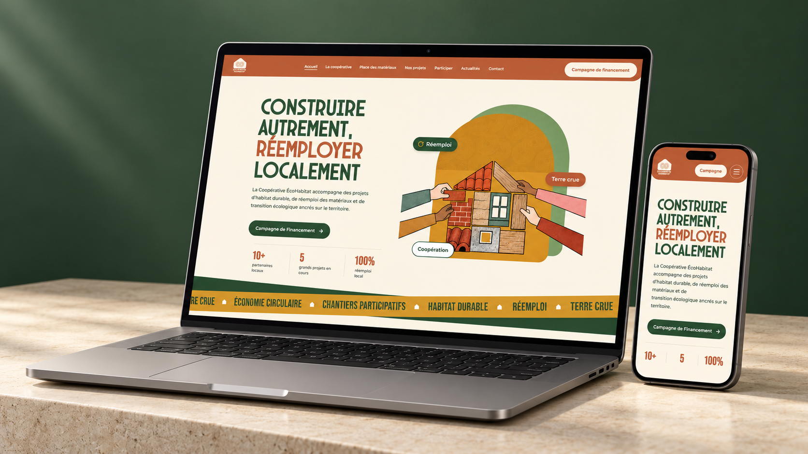
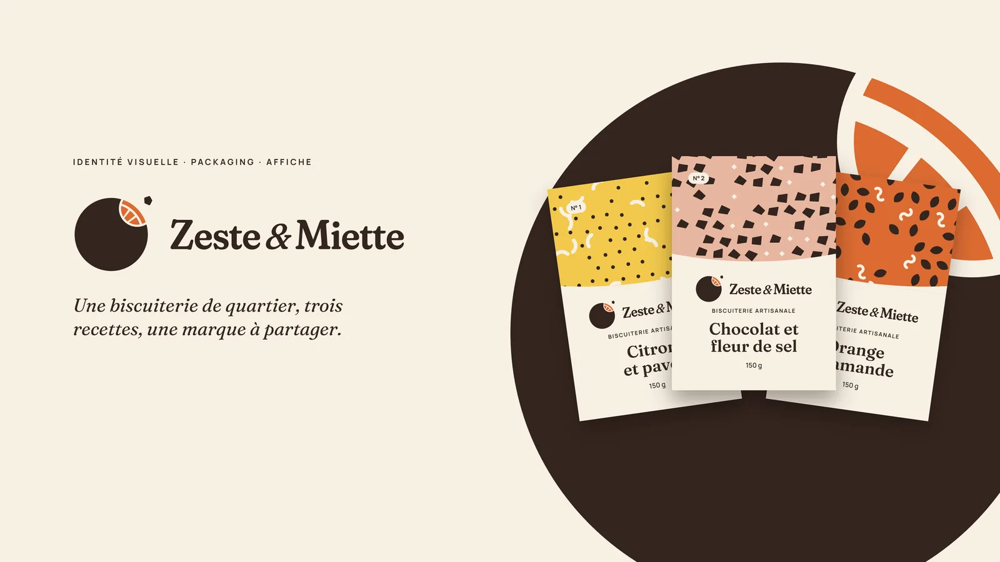
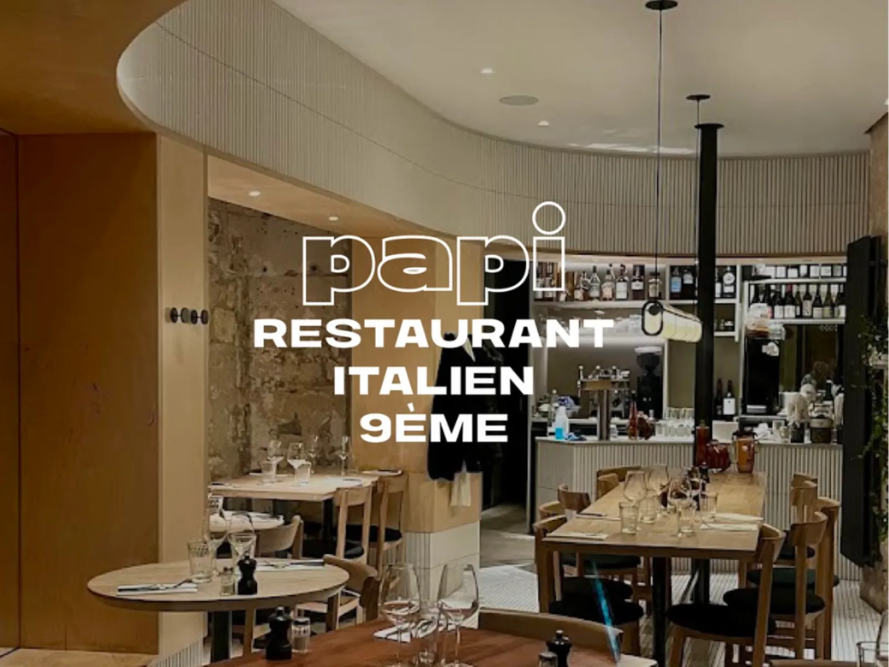
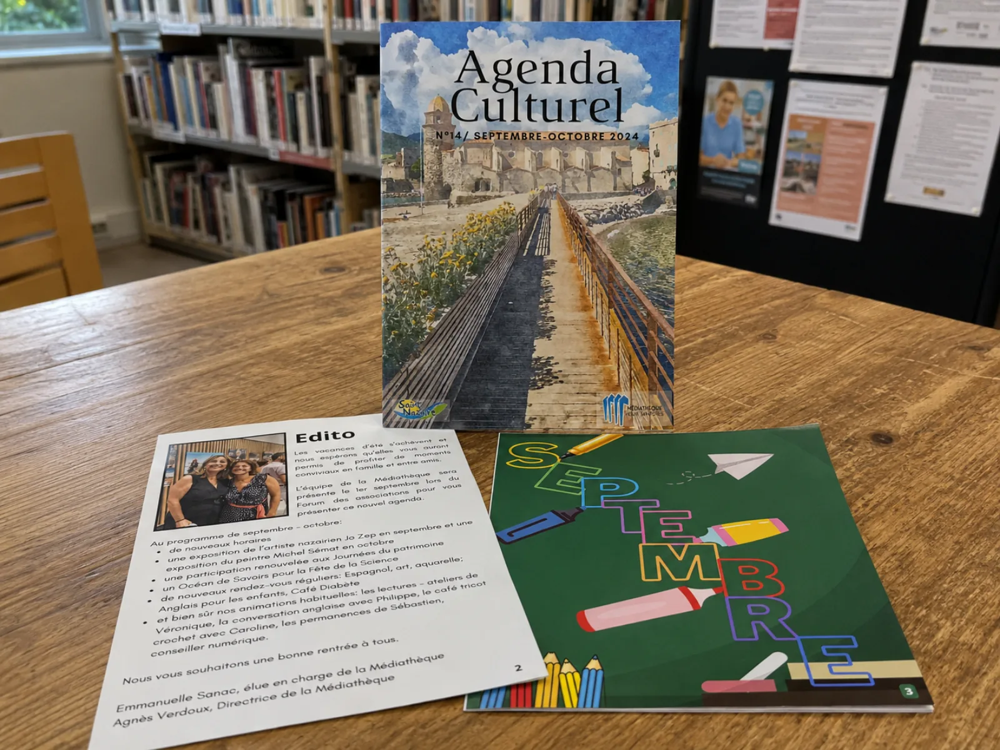
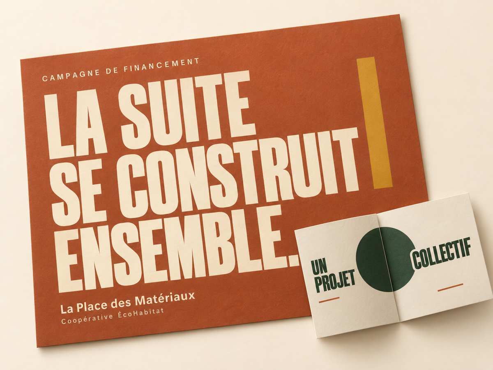
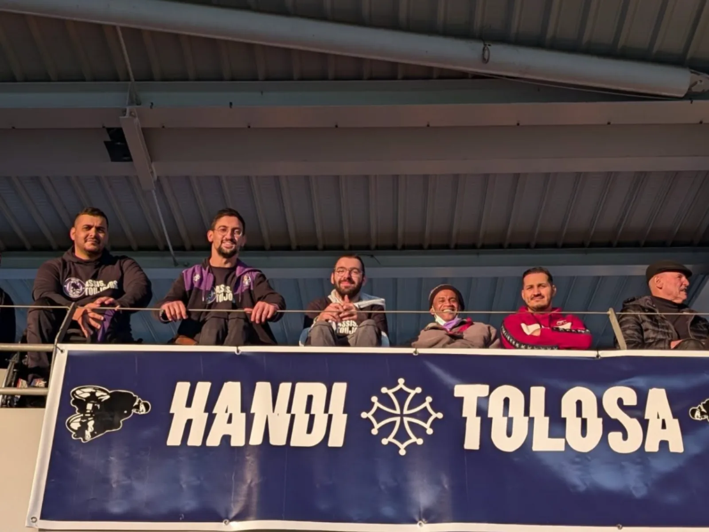
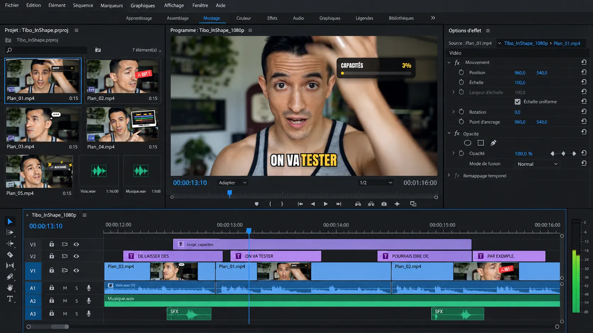
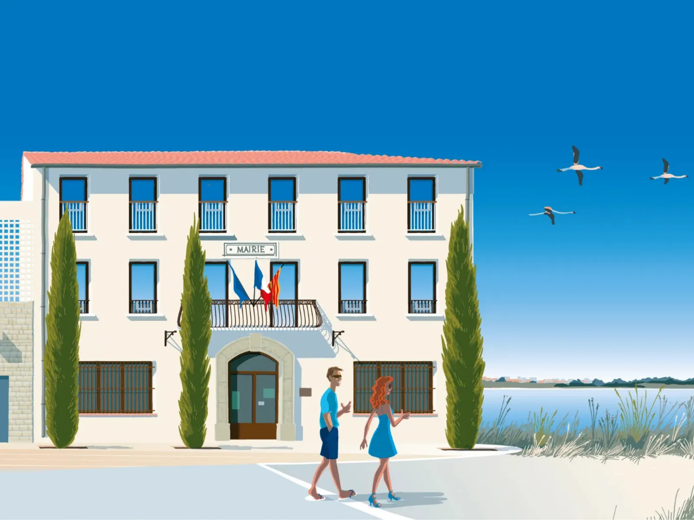
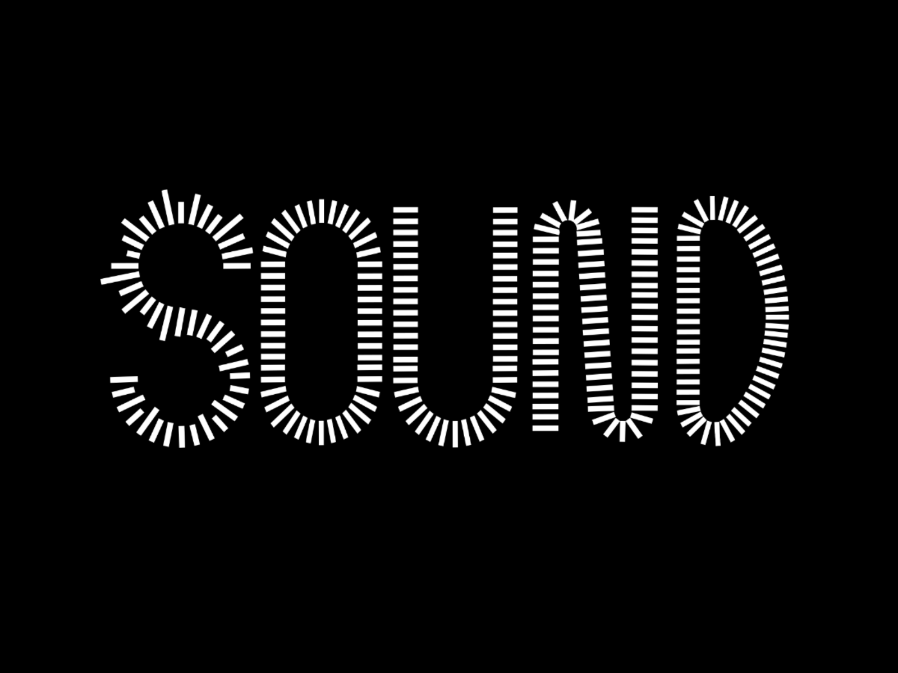
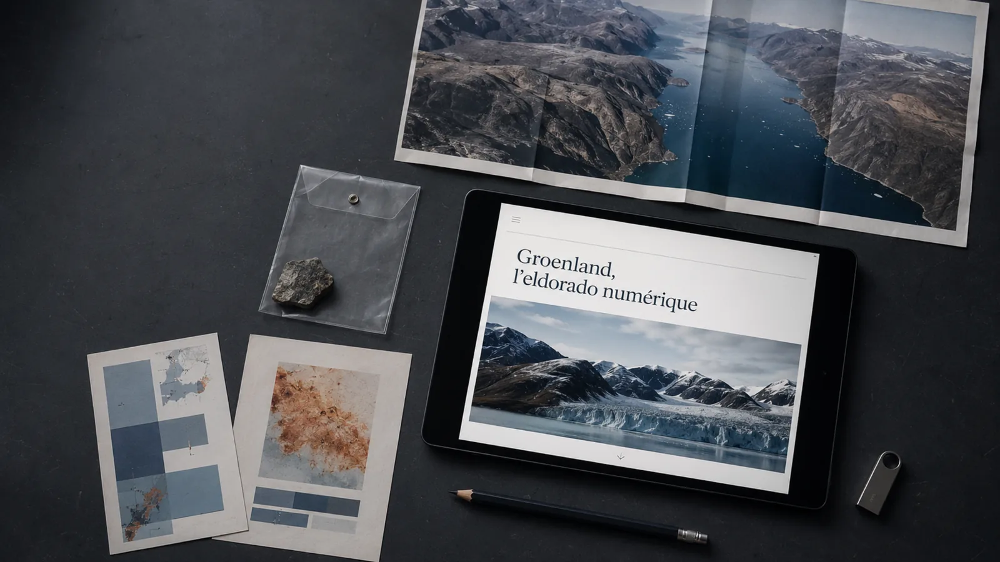

La Coopérative ÉcoHabitat
Refonte complète du site d'une coopérative de l'habitat durable, de la stratégie éditoriale à la mise en ligne.
Sites web, supports print, réseaux sociaux et stratégie : des projets menés pour une coopérative, une collectivité, une association et un restaurant, et des identités visuelles conçues sur brief.

Refonte complète du site d'une coopérative de l'habitat durable, de la stratégie éditoriale à la mise en ligne.

L'identité d'une biscuiterie artisanale, des étiquettes de sachet à l'affiche A3 et aux réseaux sociaux.

Chef de projet d'une équipe de cinq : audit de la présence en ligne d'un restaurant et maquettes de son futur site.

Trois mois pour unifier la communication d'une médiathèque : 15 affiches, un agenda culturel repensé et un Instagram relancé.

Une campagne de financement participatif pour un lieu de réemploi : stratégie, page web, mailing, affiche et plaquette.

Un an d'accompagnement pour une association de supporters du TFC en situation de handicap : réseaux sociaux et prototype de site.

Transformer des rushes bruts en une vidéo rythmée et prête à publier.

Le journal municipal de Saint-Nazaire refait de A à Z : 24 pages, maquette, direction artistique, rédaction et fichiers prêts pour l'impression.

Logo, affiche A3 et flyer d'un festival de musique électronique, sur le brief d'un graphiste professionnel.

Une controverse sur les métaux rares du Groenland, rendue lisible pour le grand public dans un site éditorial en ligne.